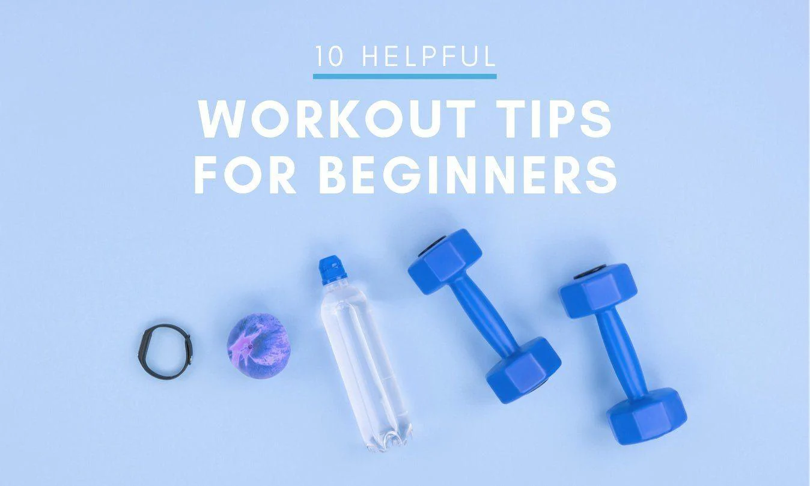

10 Essential Fitness Tips for a Healthier You
Staying fit and healthy is a journey that requires dedication, knowledge, and the right approach. Whether you’re a beginner or a seasoned fitness enthusiast, these 10 tips will help you maximize your efforts and stay on track to achieving your goals.
1. Set Realistic Goals
Start with small, achievable goals that align with your fitness level and gradually increase the intensity. Setting realistic expectations prevents burnout and keeps you motivated
2. Mix Up Your Routine
Variety is key to avoiding plateaus and keeping your workouts interesting. Incorporate different types of exercises like cardio, strength training, flexibility work, and functional movements to target various muscle groups.Variety is key to avoiding plateaus and keeping your workouts interesting. Incorporate different types of exercises like cardio, strength training, flexibility work, and functional movements to target various muscle groups.
3. Stay Consistent
Consistency is more important than intensity when it comes to fitness. Make exercise a regular part of your routine, even if it’s just a short workout, and build from there.
4. Listen to Your Body
Pay attention to how your body feels during and after exercise. Rest when needed, and don’t ignore signs of overtraining or injury. Recovery is just as important as the workout itself.
5. Focus on Nutrition
Proper nutrition fuels your workouts and aids in recovery. Prioritize whole foods, balanced meals, and adequate hydration to support your fitness goals.
6. Incorporate Strength Training
Strength training is essential for building muscle, increasing metabolism, and improving bone density. Don’t shy away from lifting weights or using resistance bands, regardless of your fitness level.
7. Warm-Up and Cool Down
Always begin your workout with a warm-up to prepare your muscles and joints, and finish with a cool-down to aid in recovery and flexibility. This practice helps prevent injuries and improves performance.
8. Stay Hydrated
Water is crucial for optimal performance and recovery. Ensure you’re drinking enough water before, during, and after your workouts to stay hydrated and energized.
9. Track Your Progress
Keep a workout journal or use an app to track your exercises, sets, reps, and how you feel after each session. Monitoring your progress helps you stay motivated and make necessary adjustments.
10. Enjoy the Process
Fitness should be enjoyable, not a chore. Find activities you love, whether it’s dancing, hiking, swimming, or weightlifting, and focus on the positive impact exercise has on your life.
Conclusion
Implementing these tips into your fitness routine can help you achieve lasting results and enjoy the journey toward a healthier you. Remember, fitness is not just about physical appearance—it's about feeling strong, energetic, and confident in your body.